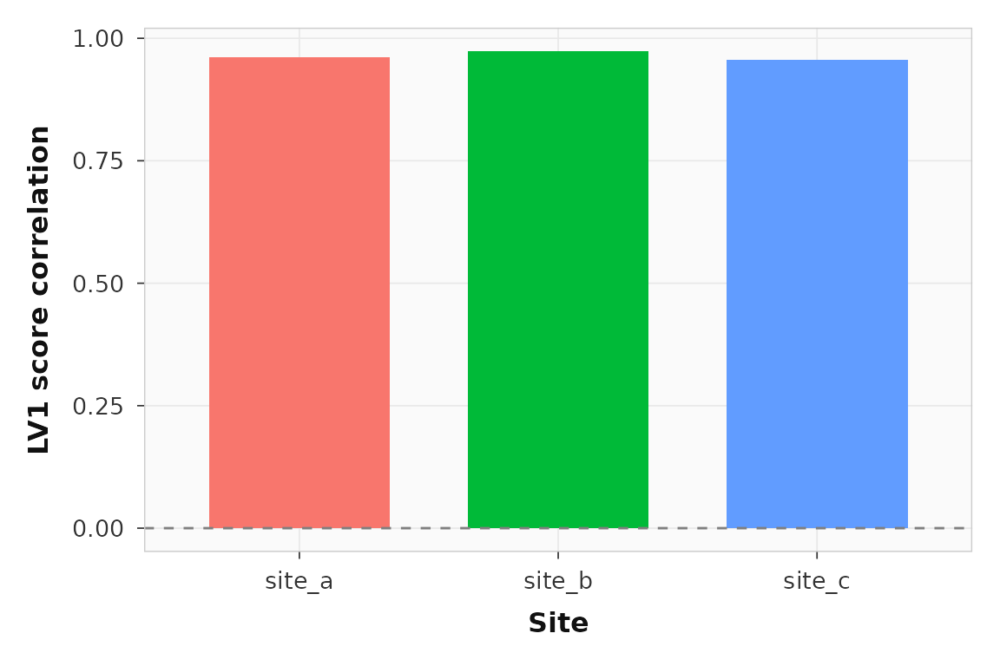

If you pool subjects from multiple sites, a single behavioral PLS fit is often the right starting point, but only if you can also ask whether the latent pattern is stable across sites. This workflow shows a basic multisite strategy:
- standardize brain and behavior within site
- fit one pooled behavioral PLS model
- inspect site-specific stability diagnostics after the fit
What does a pooled multisite dataset look like?
For a pooled analysis you still need the standard behavior-PLS row structure: subjects within conditions. The only addition is a site label for each subject or observation.
site_summary
#> site n_subjects n_observations rt_mean acc_mean
#> 1 site_a 12 24 -5.898060e-17 -3.903128e-17
#> 2 site_b 12 24 3.670928e-17 -8.673617e-18
#> 3 site_c 12 24 -9.292516e-18 8.673617e-19This example has three sites, 36 pooled subjects, and 2 conditions. The hidden setup adds site-specific mean and scale shifts before standardization, so the pooled fit has to recover the shared latent brain-behavior relation rather than scanner/site offsets.
How do you fit one pooled model and keep site information?
Use the usual builder path for behavioral PLS, then attach site labels before running the fit.
site_spec <- pls_spec() |>
add_subjects(list(brain_z), groups = n_subj) |>
add_conditions(condition_levels) |>
add_behavior(behav_z) |>
add_site_labels(site_subj) |>
configure(method = "behavior", nperm = 120, nboot = 120)
site_result <- run(site_spec, progress = FALSE)
site_diag <- site_result$site_diagnostics
site_diag_infer <- site_pooling_diagnostics(
site_result,
spec = site_spec,
infer = "score",
nperm = 39,
nboot = 79,
progress = FALSE
)
stopifnot(
inherits(site_result, "pls_result"),
is.list(site_diag),
is.list(site_diag_infer$score_heterogeneity),
setequal(site_diag$sites, site_levels)
)Check the pooled latent variables first, just as you would in an ordinary behavior PLS run:
pooled_summary <- cbind(
pvalue = round(significance(site_result), 3),
variance = round(singular_values(site_result, normalize = TRUE), 1)
)
stopifnot(
pooled_summary[1, "pvalue"] <= 0.1,
pooled_summary[1, "variance"] > pooled_summary[2, "variance"]
)
pooled_summary
#> pvalue variance
#> LV1 0.000 98.9
#> LV2 1.000 1.0
#> LV3 0.942 0.1
#> LV4 1.000 0.0LV1 is the pooled brain-behavior pattern. The important multisite question is whether that pooled pattern looks similar across sites.
What diagnostics do you get when site labels are present?
site_pooling_diagnostics() summarizes four things:
- sitewise score distributions
- sitewise brain-behavior score correlations
- site-specific refits compared with the pooled saliences
- leave-one-site-out reruns
Because site was provided in the builder, those
diagnostics are already attached to the result:
site_corr_lv1 <- subset(site_diag$site_score_correlations, lv == 1)
stopifnot(
nrow(site_corr_lv1) == length(site_levels),
all(is.finite(site_corr_lv1$correlation)),
length(unique(sign(site_corr_lv1$correlation))) == 1L,
all(abs(site_corr_lv1$correlation) > 0.35)
)
site_corr_lv1
#> site lv n_obs n_subjects correlation
#> 1 site_a 1 24 12 0.9610821
#> 2 site_b 1 24 12 0.9730672
#> 3 site_c 1 24 12 0.9562201Every site shows the same direction of brain-behavior association on LV1. That is the first thing you want to see in a pooled multisite analysis.
ggplot2::ggplot(site_corr_lv1, ggplot2::aes(x = site, y = correlation, fill = site)) +
ggplot2::geom_col(width = 0.7, show.legend = FALSE) +
ggplot2::geom_hline(yintercept = 0, linetype = 2, color = "grey50") +
ggplot2::labs(x = "Site", y = "LV1 score correlation") +
theme_pls()
Sitewise LV1 brain-behavior score correlations. All three sites show the same direction of association.
Can you test whether those site correlations are too heterogeneous?
Yes. infer = "score" adds subject-block bootstrap
intervals for each site’s LV score correlation and a permutation p-value
for cross-site heterogeneity of those correlations. This is a better
answer than “correlation below some fixed cutoff” because it asks
whether the site differences are larger than you would expect from
random subject-to-site reassignment under the pooled model.
hetero_lv1 <- subset(site_diag_infer$score_heterogeneity$global_tests, lv == 1)
site_ci_lv1 <- subset(site_diag_infer$score_heterogeneity$site_intervals, lv == 1)
stopifnot(
nrow(hetero_lv1) == 1L,
hetero_lv1$perm_pvalue > 0.1,
all(site_ci_lv1$conf_low <= site_ci_lv1$conf_high)
)
hetero_lv1
#> lv n_sites n_sites_valid fisher_q fisher_df fisher_pvalue i2
#> 1 1 3 3 0.2991849 2 0.8610588 0
#> pooled_correlation min_correlation max_correlation perm_pvalue
#> 1 0.9641849 0.9562201 0.9730672 0.75
site_ci_lv1
#> site lv n_subjects correlation conf_low conf_high
#> 1 site_a 1 12 0.9610821 0.9088551 0.9822471
#> 2 site_b 1 12 0.9730672 0.9283814 0.9887762
#> 3 site_c 1 12 0.9562201 0.9146692 0.9804204In this synthetic example, LV1 remains highly consistent across sites, so the heterogeneity p-value is not small. If that p-value were small, the pooled LV could still be significant overall while failing the multisite stability check.
Do the site-specific saliences resemble the pooled solution?
The site-specific reruns compare each site’s own fit to the pooled fit using cosine similarity in both feature space and design space.
site_sim_lv1 <- subset(site_diag$site_fit_similarity, lv == 1)
stopifnot(
nrow(site_sim_lv1) == length(site_levels),
all(site_sim_lv1$feature_cosine > 0.6),
all(site_sim_lv1$design_cosine > 0.6)
)
site_sim_lv1
#> site lv feature_cosine design_cosine
#> 1 site_a 1 0.9914166 0.9999807
#> 5 site_b 1 0.9892361 0.9996963
#> 9 site_c 1 0.9889637 0.9998657Those similarities are not a replacement for interpretation, but they
are a useful quick check that the pooled LV is not being driven by one
site alone. If you want an inferential version of that check, use
site_pooling_diagnostics(..., infer = "full"), which adds
site-label permutation p-values for cumulative subspace concordance
across the first k LVs.
What happens if you leave one site out?
Leave-one-site-out reruns are the strongest built-in stress test in the current workflow. They refit the model on two sites, then project the held-out site into that score space.
loos_lv1 <- subset(site_diag$leave_one_site_out, lv == 1)
stopifnot(
nrow(loos_lv1) == length(site_levels),
all(is.finite(loos_lv1$heldout_score_correlation)),
all(loos_lv1$feature_cosine > 0.5),
all(loos_lv1$design_cosine > 0.5),
length(unique(sign(loos_lv1$heldout_score_correlation))) == 1L
)
loos_lv1
#> held_out_site lv feature_cosine design_cosine heldout_score_correlation
#> 1 site_a 1 0.9978663 0.9999887 0.9601310
#> 5 site_b 1 0.9976623 0.9999439 0.9723149
#> 9 site_c 1 0.9970719 0.9999691 0.9551316If the held-out score correlations flip sign or collapse toward zero, the pooled latent pattern is not really shared. In this synthetic example the held-out site still lines up with the training fit, which is what you want in a stable pooled analysis.
When should you stop pooling and rethink the model?
Pooling is still a model choice. The diagnostics here are meant to tell you when the pooled result is doing real shared work and when it is papering over site heterogeneity.
Rethink the pooled model if you see any of these:
- a small score-heterogeneity p-value for the pooled LV
- sitewise LV correlations with different signs or non-overlapping sitewise bootstrap intervals
- low site-specific salience similarity to the pooled LV, especially
if
infer = "full"also shows weak subspace concordance - leave-one-site-out fits that fail only when one particular site is held out
- score distributions that are dominated by one site rather than by the latent pattern
At that point you may want stronger harmonization, explicit site residualization, or separate site-specific analyses.
Where should you go next?
| Goal | Resource |
|---|---|
| Basic behavior PLS without site pooling | vignette("behavior-pls") |
| Scripted CLI and artifact workflow | vignette("scripted-workflows") |
| YAML contract for multisite pipelines | vignette("pipeline-yaml-spec") |
| Add site labels in the builder | ?add_site_labels |
| Compute diagnostics from a fitted result | ?site_pooling_diagnostics |
| Full behavior wrapper | ?behav_pls |